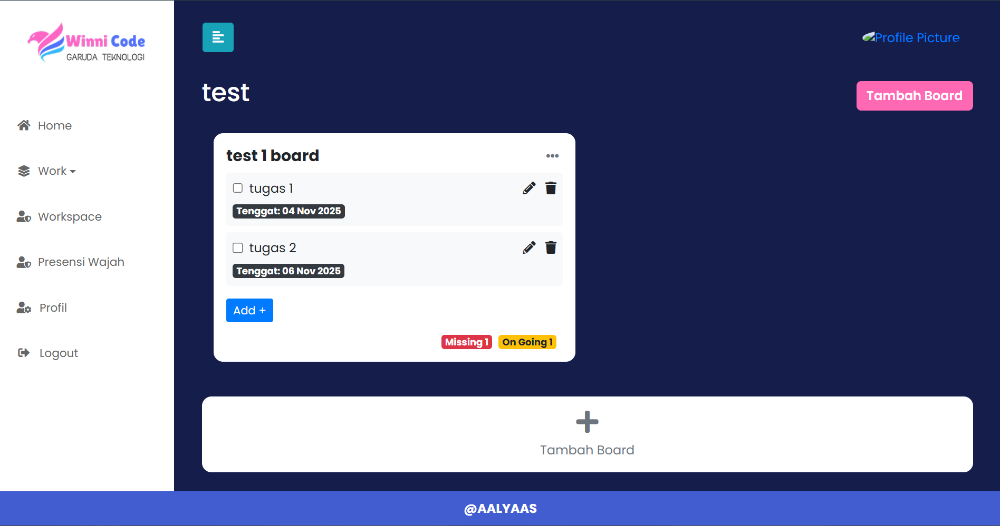
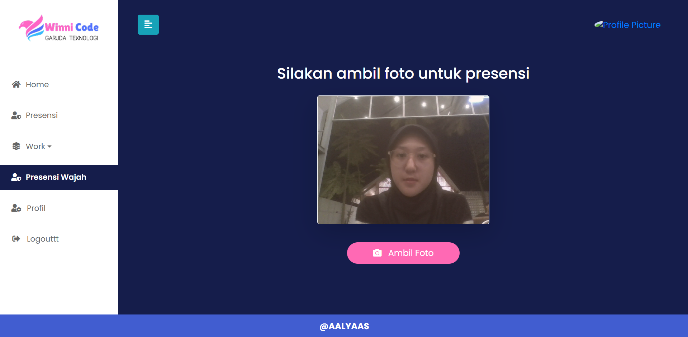

KerjaKU is a web-based employee attendance and work activity management system developed during my internship at PT Winnicode Garuda Teknologi.
The system was developed to replace the previous manual attendance process using chat and Google Forms with a centralized platform. It integrates face recognition technology into the attendance workflow and provides an administrative dashboard for managing and monitoring employee attendance and work activities.
As a Full Stack Developer Intern, I contributed to the development of the system across both frontend and backend. I worked with Laravel and MySQL for application and database development, while also contributing to the responsive user interface and administrative dashboard.
I also integrated an external Face Recognition API into the attendance workflow and contributed to data visualization using Chart.js.
The application was developed using Laravel 11 and PHP for the backend, with MySQL for data management. Bootstrap and JavaScript were used to build the responsive web interface, while Chart.js was used for dashboard data visualization.
For the attendance feature, an external Face Recognition API was integrated into the web application workflow, connecting the recognition process with employee attendance records.
Consolidated manual attendance and work reporting processes into a centralized web-based system, supporting 3 user roles through dedicated access and a unified administrative dashboard.

